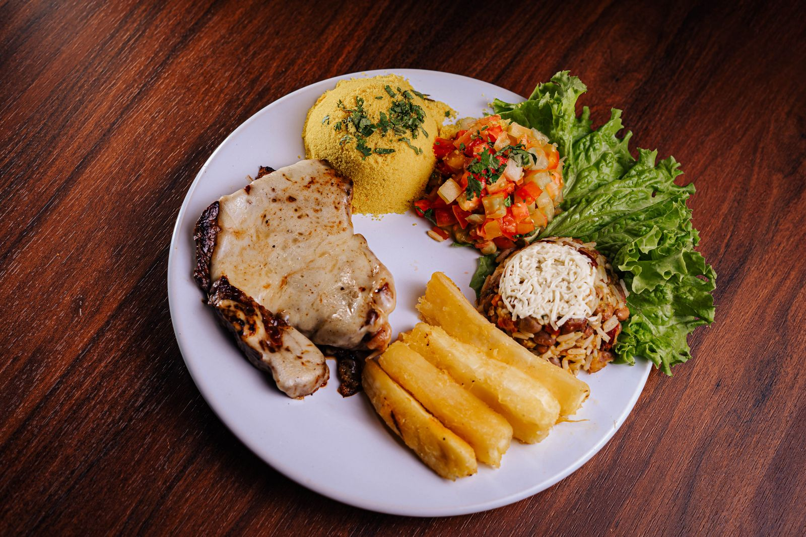
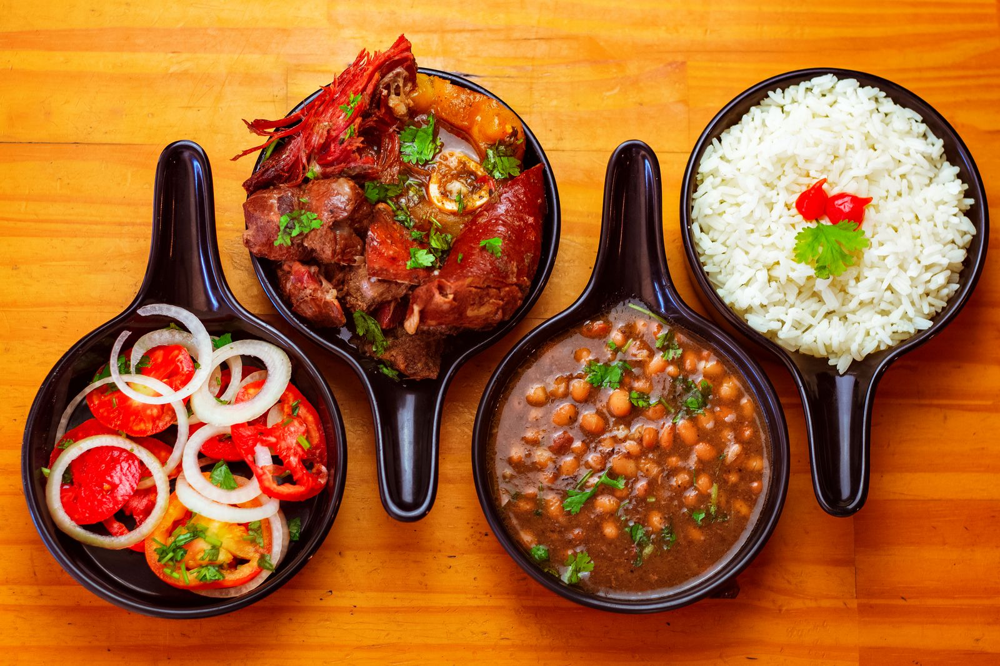
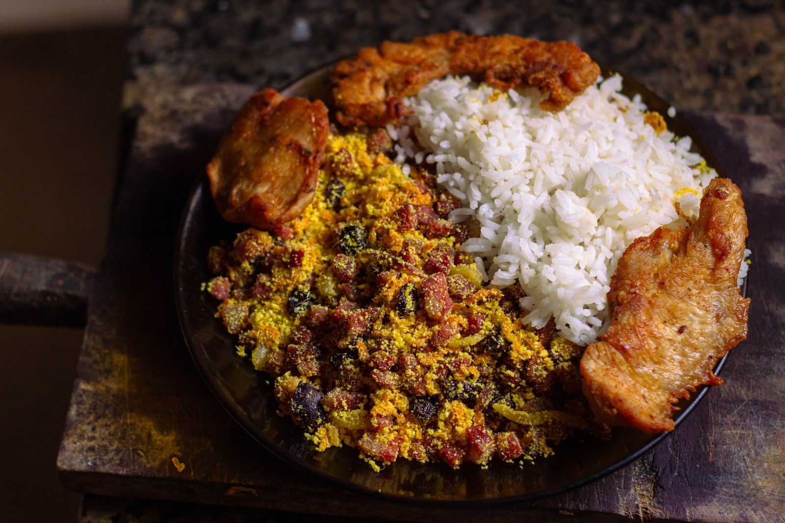

Prato da casa
Arroz, feijão, legumes e frango grelhado.
R$ 38,00
Um almoço simples para montar do seu jeito. Escolha no cardápio e veja o resumo antes de seguir.
Explorar o cardápio
Do prato completo ao suco, o cardápio cabe numa olhada. Toque para adicionar, ajuste as quantidades e confira os valores antes de abrir uma mensagem de demonstração.

